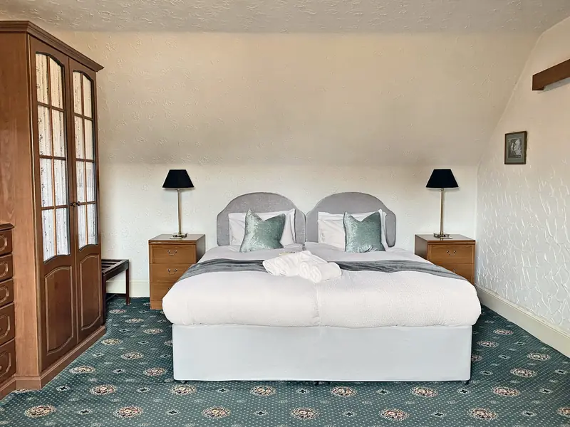
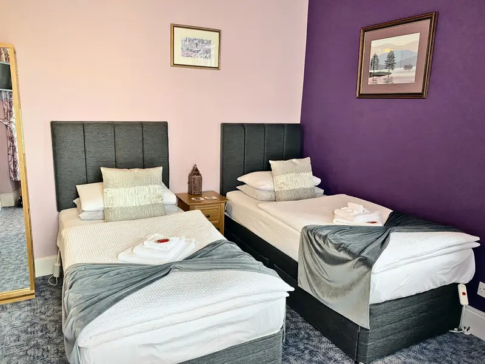
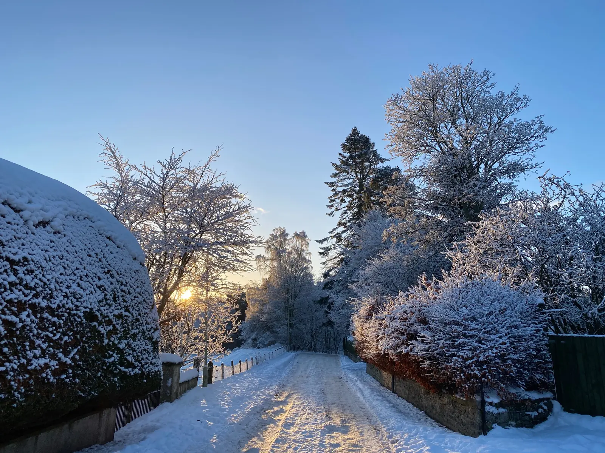
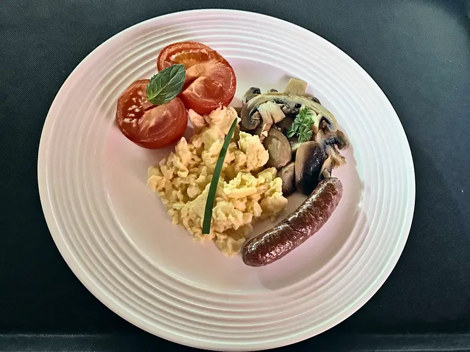
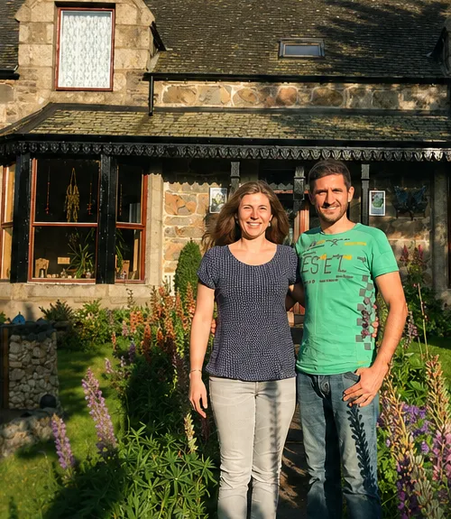

Superior
MacDonald
- Super king-size bed
- Bath with shower, the only bath in the house
- Upstairs

Sarah and Daniel welcome you to a homely guest house from 1868, quietly set in half an acre of gardens, a four-minute walk from the High Street.
About us
Sarah and Daniel welcome you to Grantown-on-Spey, in the beautiful Highlands of Scotland, and to the elegant yet homely Garden Park Guest House. Built in 1868, it is quietly set in half an acre of well-stocked gardens, close to Grantown Golf Course, the Speyside river walk and the pine forests. The High Street, with its family-owned shops, restaurants and pubs, is only a four-minute walk away.
Grantown-on-Spey is part of the Cairngorms National Park. It connects Strathspey and Badenoch, Speyside, Moray, Nairnshire and the Cairngorms, which makes it one of the best bases for a comfortable, longer stay.
Licence, Home Sharing, No. HI-70000-R
Rooms
All six rooms are en-suite, individually furnished and kept to a high standard. Good quality beds, central heating and electrically heated underblankets make sure you sleep well. Single occupancy is possible in every room.

Superior

Deluxe

Double · ground floor


Twin · ground floor

Room rates vary by season, room type and length of stay, and you might be pleasantly surprised by our rates for longer stays. Please check live availability for current prices.
Our sister cottage
Our self-catering cottage in the grounds of Garden Park, for two adults plus up to two children up to 10, or one child up to 12. It is at road level with a walk-in shower, and the raised double bed leaves plenty of room for luggage underneath. Butterfly Cottage is also the only place where we can welcome your dog.
Discover Butterfly CottagePlease ask about our longer-term stay rates, out-of-season offers and group rates. We can also offer exclusive use for family celebrations, weddings and other group events. Just get in touch and let us help you plan your perfect Highland event.
Breakfast
We focus on the two B's that matter most: comfortable beds and a breakfast of the highest quality. You put your breakfast together yourself, and we cook it fresh for you, served at your own table. Vegetarian, vegan or no eggs at all is no problem.
After a long drive, nobody wants to go out again. That's why we offer our Wee Fancy Brügel for pre-order: a proper Swiss rustic comfort meal on a crusty stone-baked sourdough baguette, in four varieties. Not your average snack, but a full-sized meal for real hunger. Monday to Saturday, pre-order at least 24 hours before arrival, exclusively for Guests of Garden Park and Butterfly Cottage.


Packages & news
26 – 30 December 2026
Stay three nights and pay for two, or stay four nights and pay for three, in our MacDonald and Grant rooms. Between Christmas and Hogmanay nobody knows what day it is anyway.
Check availability26 December 2026 – 4 January 2027
We are open over Christmas and New Year and look forward to bringing in 2027 with you in Grantown-on-Spey.
Check availabilityGuest reviews


„Wir vermissen euer Frühstück mit der tollen Auswahl und dem selbstgebackenen Brot. Und eure Herzlichkeit …“
[More real guest quotes to follow, chosen by Sarah and Daniel]

Explore
Grantown-on-Spey, founded in 1765, is the historic capital of Strathspey, in the heart of the Cairngorms National Park. Few places in Scotland offer as much all year round: walks and wildlife in Anagach Woods three minutes from our door, Speyside whisky, golf, castles, the Moray coast and Inverness all within easy reach.
Our interactive map features 50+ hand-picked destinations and ready-made day trip ideas across Strathspey and Badenoch, Speyside, the Cairngorms, the Moray and Nairn coast and parts of Aberdeenshire and Inverness-shire.
Open the interactive mapGreen Policy
We work closely with Green Tourism and hold their Gold award. We reduce our carbon footprint wherever we can: better recycling, less packaging, local ingredients, less waste. We have our own herb garden and a bee-friendly flower garden, and use steam cleaning where possible.
Since the 2024 season, solar panels on the south and south-east sides of the house help power Garden Park, and we have replaced all water tanks. If you drive an electric car, you can charge it at our charging station with the Tap Electric app.
Washing linen and towels after just one night takes the same water, energy and cleaning products as after a longer stay. Staying longer is a simple way to travel more sustainably, and it gives you time to really get to know Grantown-on-Spey and the Cairngorms instead of rushing through.

Good to know
We are open from March to October and between Christmas and New Year. From November to February the house is closed, as our old granite house takes a long time to heat. On request we can open in winter for fixed dates and a minimum of four nights.
Bookings are confirmed with a deposit for the first night per room. We accept cash (GBP), bank cards, bank transfer and Stripe payment links, completely contactless.
The house sits slightly raised, about 30 metres from the road, reached by a footpath that works with a rollator, or by 12 shallow steps. Built in 1868, it is not fully wheelchair accessible. Two rooms are on the ground floor: Sutherland with a walk-in shower, Mathieson with a 15 cm shower step.
Dogs and cats are welcome in Butterfly Cottage only. Pet fee £39 per booking and week. We cannot accept pets in any other room.
Drying facilities and lockable storage on site, and we are the guest house closest to the Speyside Way. Luggage transfer to your next accommodation can be arranged, just ask us before you arrive.
Every room has a complimentary beverage tray, bathroom toiletries, TV and hairdryer. Our residents' lounge has a TV and a log-burning stove for colder days.
Gallery





Your hosts
Sarah and Daniel look forward to welcoming you to Garden Park, together with Lucy, our Dalmatian. We are happy to help with local ideas, practical travel tips and our personal favourites, so you make the most of your Highland stay.
We speak English, German, Swiss German and Italian.
Booking direct means no platform commission, and you deal directly with us.
Check availabilityContact
+44 1479 873235
relax@garden-park.co.uk
what3words: include.milky.baths
Inverness and the Moray coast are under 50 minutes away by car. [Train, bus and taxi details to follow, as in the interactive map.]